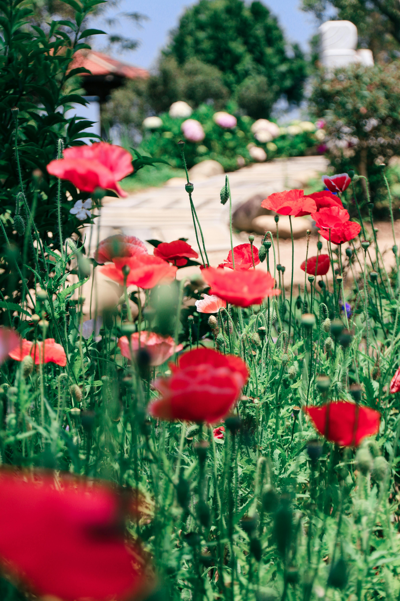
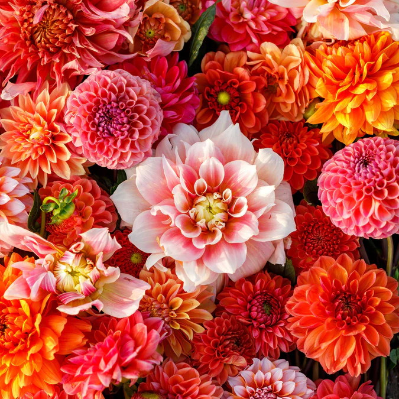
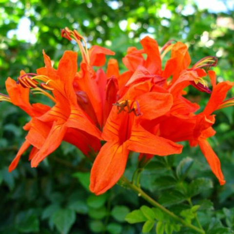
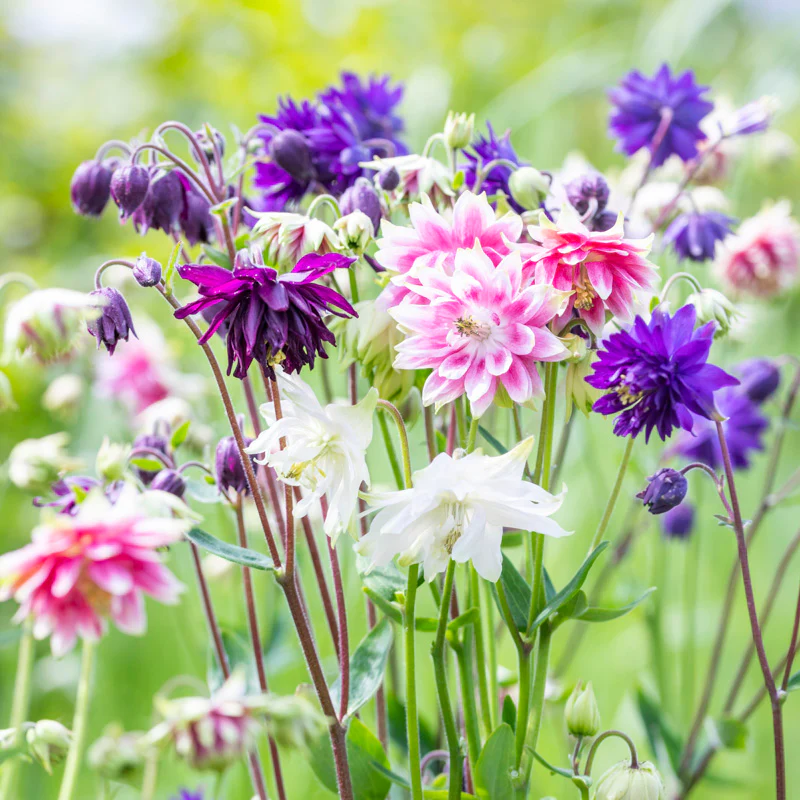
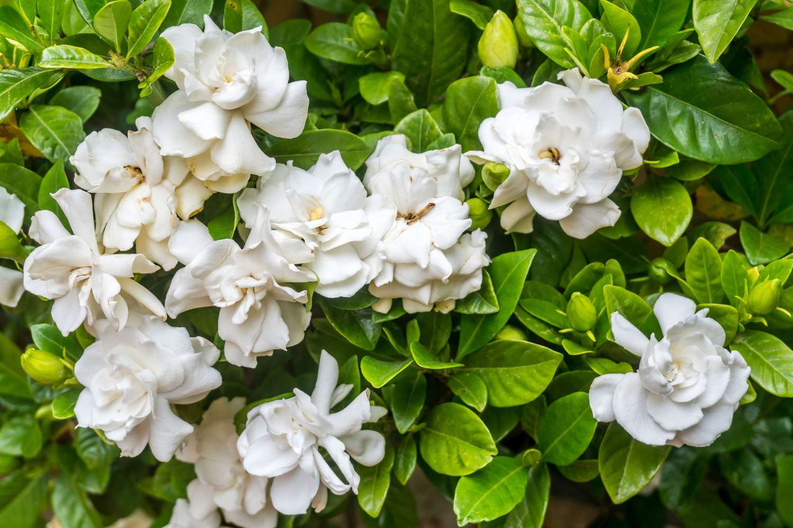
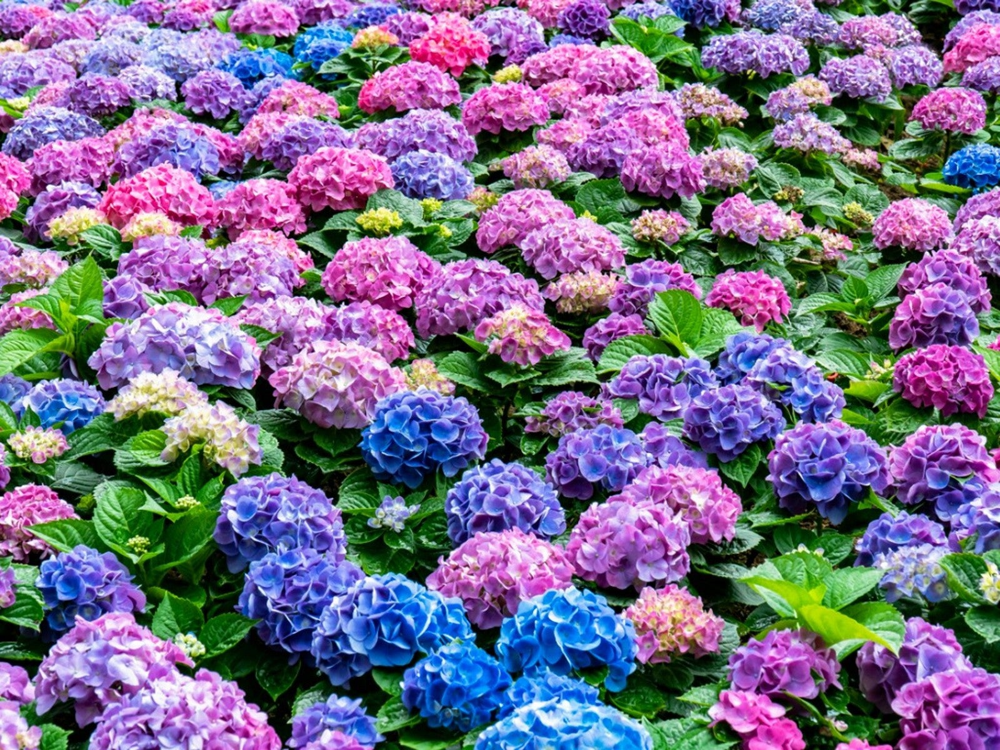
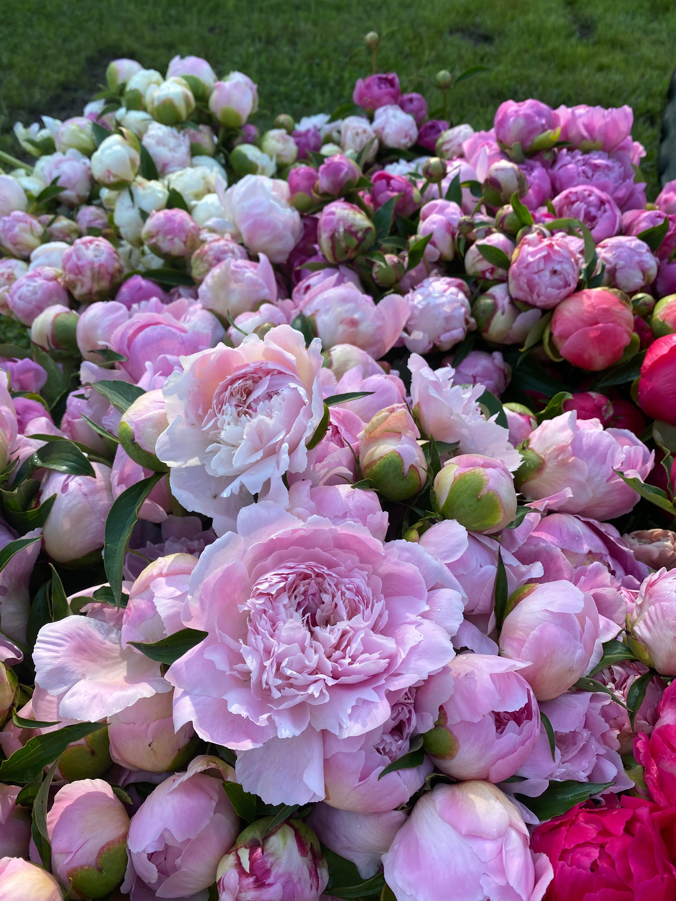

Brightly coloured with tall stems and dainty flowers, these snapdragons look lovely arranged with roses and is often used to add height to an arrangement.

Poppy
R100
In addition to eternal sleep, the poppy has signified remembrance and hope through history. Today, poppies carry a message of peace with an underlying sentiment.
Roses
R130
They burst with colours ranging from pastel pink, peach, and cream, to vibrant yellow, orange, and red.
Shop our All-Year blooms:

Dahlias
R140
Dahlia is a genus of bushy, tuberous, herbaceous perennial plants native to Mexico and Central America. As a member of the Asteraceae family of dicotyledonous plants, its relatives include the sunflower, daisy, chrysanthemum, and zinnia.

Tecomaria capensis
R110
Tecomaria capensis, the Cape honeysuckle, is a species of flowering plant in the family Bignoniaceae, native to southern Africa.

Aquilegias
R100
Aquilegia is a genus of about 130 species of perennial plants that are found in meadows, woodlands, and at higher elevations throughout the Northern Hemisphere, known for the spurred petals of their flowers.
Shop our rare blooms:

Gardenias
R250
Gardenia is a genus of flowering plants in the coffee family, Rubiaceae, native to the tropical and subtropical regions of Africa, Asia, Madagascar, Pacific Islands, and Australia.

Hydrangeas
R280
Hydrangea, commonly named the hortensia, is a genus of more than 70 species of flowering plants native to Asia and the Americas. By far the greatest species diversity is in eastern Asia, notably China, Korea, and Japan.

Peonies
R260
The peony or paeony is any flowering plant in the genus Paeonia, the only genus in the family Paeoniaceae. Peonies are native to Asia, Europe, and Western North America.